FESTA DO CORPO DE DEUS
“CORPUS CHRISTI”
Santa Juliana, conhecida como
Juliana do Monte–Cornillon (nascida em 1192/1193 falecida 5/04/1258) era uma 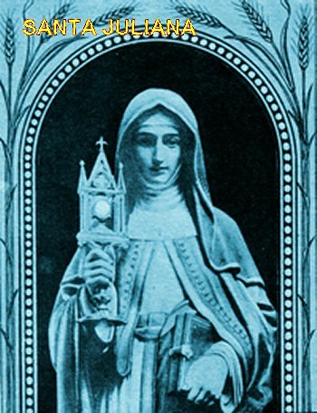
Juliana e sua irmã gêmea Agnes, nasceram na aldeia de Retinnes, no Bispado de Liége. Ficou órfã na idade de 5 anos, sendo colocada no recente fundado Hospital em Monte–Cornillon, próximo a Liège. Existia também na mesma região, um Mosteiro dividido em duas partes, uma para os Seminaristas/Sacerdotes e a outra para as Noviças/Irmãs Religiosas, vivendo cada um na sua própria ala. Na sequência dos anos, as duas meninas foram colocadas numa pequena fazenda ao lado do referido Mosteiro, e aos 13 anos de idade Juliana entrou na Ordem das Irmãs. Sobre Agnes, a irmã gêmea, as notícias desapareceram. Os hagiógrafos imaginam que ela morreu durante a permanência na Fazenda.
Com o hábito da Irmandade, Irmã Juliana trabalhou durante muitos anos num leprosário que também estava próximo ao Mosteiro. E sobre a sua vida pessoal, desde criança adorava a Sagrada Eucaristia, em todas as Santas Missas que participava, cultivava o hábito de antes do inicio da cerimônia, permanecer um tempo razoável rezando diante do Sacrário fechado. Aliás, é digno de se registrar aqui, que muitas mulheres de Liège, solteiras e casadas, também tinham este mesmo hábito de permanecer rezando diante do SANTÍSSIMO SACRAMENTO, antes da Santa Missa e inclusive em outros horários.
Com a idade de 16 anos, a Irmã Juliana passou a ter visões, que exatamente começaram num dia de uma Festa dedicada a JESUS. Ela via uma lua cheia bonita e redondinha, e no meio havia uma faixa ligeiramente escura, meio apagada como se estivesse opaca, que a atravessava diametralmente. A Irmã pensava e raciocinava muito, mas não conseguia entender o que a visão representava. Então rezou suplicando a inspiração e luzes do SENHOR para entender aquela mensagem, que ELE Mesmo havia permitido chegar ao conhecimento dela. E foi assim que entendeu o significado: aquela “lua cheia simbolizava a vida na Igreja, e a linha opaca que a dividia ao meio, representava a ausência de uma festa litúrgica importante, exatamente em homenagem ao SAGRADO CORPO E SANGUE DE CRISTO”.
Ficou admirada, pensou em agir, em fazer alguma coisa... Mas como? Ela não tinha relacionamentos ilustres e nem meios para realizar uma digna festa em homenagem a JESUS SACRAMENTADO. Então decidiu aguardar a oportunidade certa, esperando a manifestação da Vontade Divina. Particularmente, compartilhava a sua visão com a Irmã Eva de Liège, sua amiga, que morava numa cela ao lado da Basílica de São Martinho, e também com algumas Irmãs do Mosteiro, e permanecia humildemente no silêncio, sem tomar nenhuma providência, limitando-se a continuar normalmente com suas orações e trabalhos.
Por volta do ano 1225, a Irmã Juliana foi eleita Priora do Mosteiro Feminino, e logo numa primeira oportunidade, contou as suas visões ao Confessor Padre John de Lausanne, que era um Padre Secular da Basílica de São Martinho, em Liège.
Padre John ficou entusiasmado com a revelação da Irmã e logo querendo ajudar, fez muitos contatos com teólogos franceses e professores dominicanos, que se reuniram em Liège. Entre as autoridades religiosas presente estavam também Robert de Thorete, Bispo de Liège; Hugh de Saint-Cher, Prefeito Dominicano Provincial para a França; e Jacques Pantaleon de Troyes, Arquidiácono de Liège, que mais tarde se tornou Bispo da Diocese de Verdun, e então Patriarca Latino de Jerusalém, o qual, posteriormente se tornou Papa, sob o nome de Papa Urbano IV.
Na reunião, Padre John relatou as visões da Irmã Juliana e todos eles, depois de analisarem os detalhes dos acontecimentos, concordaram unanimente em promover uma Festa em homenagem ao “CORPO DE DEUS”, pois não havia nada nas visões que fossem contrárias a Fé Católica.
Ao receber a aprovação, a Irmã Juliana e o Padre John começaram a trabalhar ativamente para alcançar o objetivo da “Festa”. Fizeram diversos contatos com autoridades religiosas e escreveram um roteiro inicial das cerimônias.
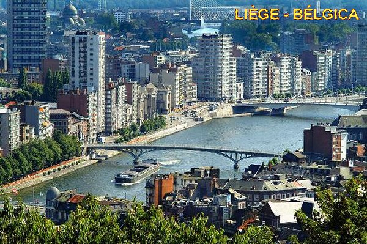
Acontece que a política naquela época já estava muito agitada, havia os Guelfos de um lado e os Gibelinos do outro lado, pessoas que agressivamente reacenderam as rivalidades, as brigas internas entre os membros da baixa nobreza no Flandres, e como sempre acontece, na busca de interesses e privilégios, que envolviam todos os setores da sociedade, inclusive a religião. A humilde Irmã Juliana foi envolvida nos conflitos, sem saber por que e sem conhecer ninguém, pois além de todas as suas qualidades excepcionais, era uma mulher enérgica e exigente, e quando foi eleita Priora do Mosteiro Feminino, instalou a rigorosa Regra Agostiniana, exigindo pleno e exato cumprimento da mesma, fazendo com que determinadas pessoas mudassem os seus hábitos ou abandonassem a profissão religiosa.
E então, aconteceu que em 1240, o Mosteiro Masculino e o Leprosário adjacente, ficaram sob a supervisão de um político influente de nome Roger, homem esperto, ambicioso e de religião duvidosa, que conseguiu a posição através de simonia e terríveis intrigas. Imediatamente quis atingir a Priora Irmã Juliana arrancando-a do seu caminho, e com este objetivo, incitou o povo contra ela, com calúnias e inclusive, ameaçando-a de morte. A Irmã Juliana sem alternativa fugiu e foi para junto da Irmã Eva, que morava adjacente a Basílica de São Martinho, onde trabalhava o Padre John.
Com a ajuda de Robert de Thourotte, Bispo de Liège, Irmã Juliana foi restaurada como Priora do Mosteiro Feminino em Liège. Roger foi deposto. Todavia em 1247, após a morte do bispo Robert, ficando a Diocese sob o comando do Bispo Henry de Gueldre, Roger novamente recuperou o controle de Mont Cornillon, e a Priora Irmã Juliana novamente foi expulsa do Mosteiro. Esses eventos apontam para um cenário político histórico bem mais amplo naquela época, com abomináveis rivalidades existentes que incidia sobre o bispado desocupado, e sendo as desavenças muito mais amplificadas pela realidade da excomunhão de Frederico II, pelo Papa Inocente IV.
A única solução foi desaparecer daquela região. Irmã Juliana encontrou refúgio nos Mosteiros Cistercienses em Robermont, Val-Benoit e Val-Notre-Dame, e depois entre os pobres Beguines. Ajudada pela Abadesa Senhora Imene, irmã do Arcebispo Conrad de Colônia, a Irmã Juliana se instalou na Abadia Cisterciense de Salzinnes e, finalmente, em Fosses-la-Ville, no condado de Namur, onde permaneceu em reclusão por sua própria vontade, até os seus últimos dias de vida. No seu leito de morte, pediu que chamassem o seu Confessor, o Padre John de Lausanne, mas infelizmente nenhum dos seus amigos de Liège chegou a tempo. Após sua morte, com base no seu próprio desejo manifestado ao monge cisterciense Gobert d'Aspremont, o seu corpo foi conduzido para Villers Abbey. No domingo seguinte, seus restos mortais foram movidos para a seção do cemitério reservado aos santos. Embora seu culto tenha se desenvolvido imediatamente, ela só recebeu o reconhecimento oficial em 1869 com o papa Pio IX.
ACONTECIMENTOS APÓS A MORTE DA IRMÃ JULIANA
Em 1261, o Arquidiácono Pantaleão foi
eleito Papa e tomou o nome de Papa Urbano IV. A Irmã Eva que era 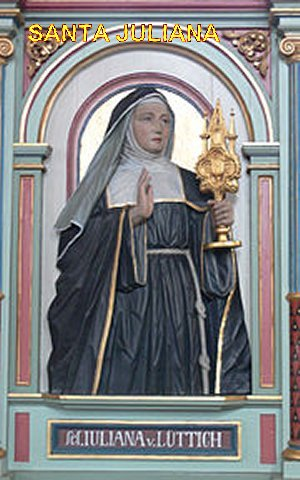
Aconteceu ainda, que no verão de 1263 um padre da Boemia (hoje Checoslováquia), chamado Peter de Praga, começou a duvidar da “Presença Real” de JESUS na Hóstia e no Vinho Consagrado. Sendo homem de reto caráter, decidiu fazer uma peregrinação a Roma a fim de rezar junto ao túmulo de São Pedro, para suplicar a intercessão do Apóstolo junto a DEUS, no sentido de alcançar do SENHOR a graça de dissipar as suas terríveis dúvidas. Satisfeito com a peregrinação começou a viagem de volta a pé. Percorrendo a Via Cássia decidiu parar para descansar a noite em Bolsena. Ao deitar, as dúvidas sobre a sua fé o atacaram novamente. Dormiu mal, rezou muito, mas estava muito preocupado. No dia seguinte, logo pela manhã celebrou a Santa Missa na Igreja de Santa Cristina. E no momento da consagração, a Hóstia começou a sangrar sobre o corporal. Ele levou um susto. Com medo e confuso, sem saber o que fazer, tentou esconder o fato, embrulhando o "Sagrado Corpo de JESUS SACRAMENTADO" no corporal de linho branco. Concluiu a celebração da Santa Missa, e rapidamente entrou na sacristia ocultando o “Milagre”. Durante o percurso algumas gotas de Sangue caíram no chão de mármore e nos degraus do altar. O jovem coroinha que auxiliava na celebração e o zelador da Igreja observaram aquela anormalidade e providenciaram a limpeza do piso.
O Padre Pedro de Praga foi imediatamente levar o fato ao conhecimento do Papa Urbano IV, que estava em Orvieto, cidade próxima, e narrou o que havia acontecido. O Papa então o enviou ao bispo local, a fim de anotar, verificar a história e recuperar as relíquias. Concluídas as pesquisas, a Igreja Católica reconheceu oficialmente o "Milagre Eucarístico", cujas relíquias são preservadas na catedral de Orvieto.
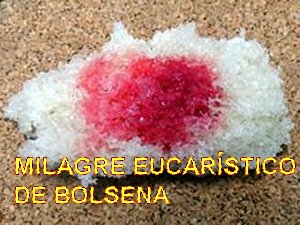
Em 1264, o Papa Urbano IV emitiu a Bula Papal “Transiturus de hoc mundo” (Passagem pelo mundo) em que a “Festa de Corpus Christi”, ou seja, a “Festa do Corpo de Cristo” foi declarada obrigatória em todos os Países de Rito Latino. Esta foi à primeira festa universal sancionada pela história no Rito Latino. A Celebração é tradicionalmente feita na quinta-feira após o domingo da SANTÍSSIMA TRINDADE, mas nas reformas litúrgicas de 1969, sob o Papa Paulo VI, os bispos de todas as nações têm a opção de transferi-la para o domingo seguinte.
A Irmã Juliana foi canonizada em 1869 pelo Papa Pio IX. Anualmente recebe homenagens por ter procurado realizar com fé e desprendimento, a Vontade do SENHOR. Em nosso tempo, também foi celebrada e lembrada pelo Papa João Paulo II, que escreveu uma carta mencionando-a no 750º aniversário da “Festa de Corpus Christi” (1246-1996). A Festa anual de Santa Juliana é no dia 6 de abril.
FOTOGRAFIAS
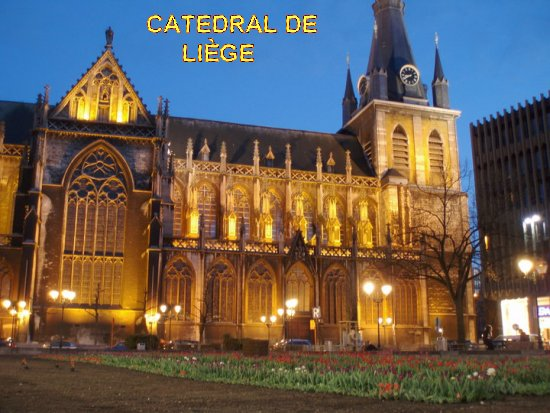
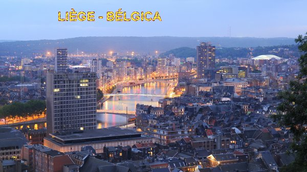
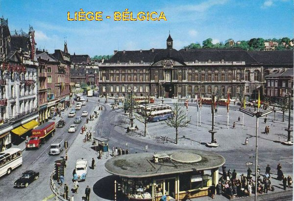
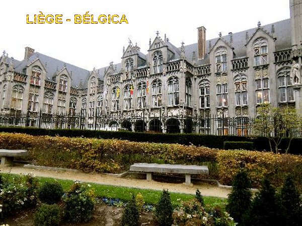
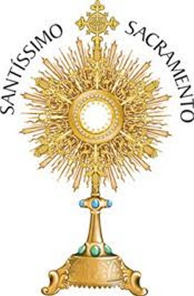
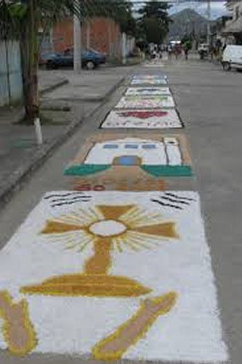
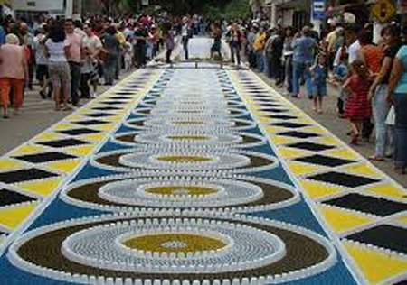
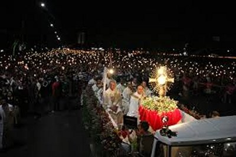
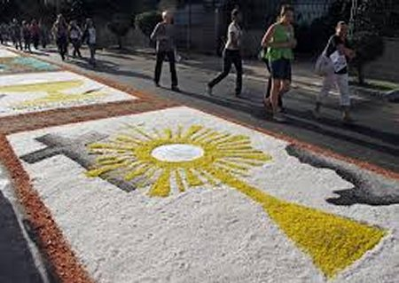
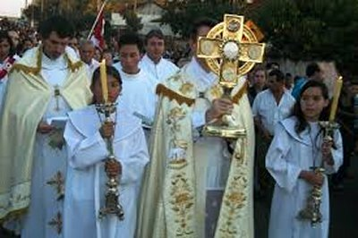
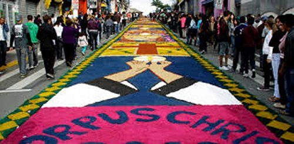
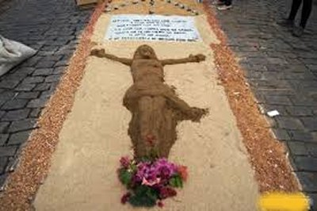
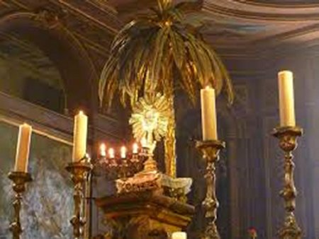
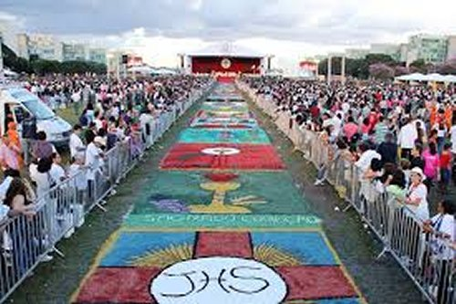
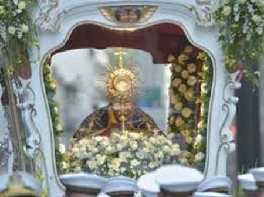
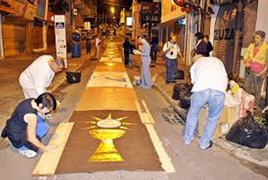
"CONVITE"
Este Site foi construído pelo Apostolado dos Sagrados Corações. Clique aqui ou no endereço abaixo para visitar o nosso PORTAL. Nele encontrará uma apreciável quantidade de Sites sobre o CRIADOR, o ESPÍRITO SANTO, JESUS DE NAZARÉ, sobre NOSSA SENHORA, os ANJOS do SENHOR e Sites que apresentam a Vida e Obra de diversos SANTOS. Todos eles elaborados com cuidadosa dedicação, essencialmente fundamentados na Sagrada Escritura, na Tradição Cristã, nas Manifestações Sobrenaturais e na Vida e Obra dos Santos, com a intenção maior de somente informar a Verdade.
http://www.apostoladosagradoscoracoes.com/
"E-MAIL"
Desejando comunicar-se conosco, por favor utilize o E-mail abaixo:

"FIRMAS DE BUSCAS"


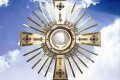